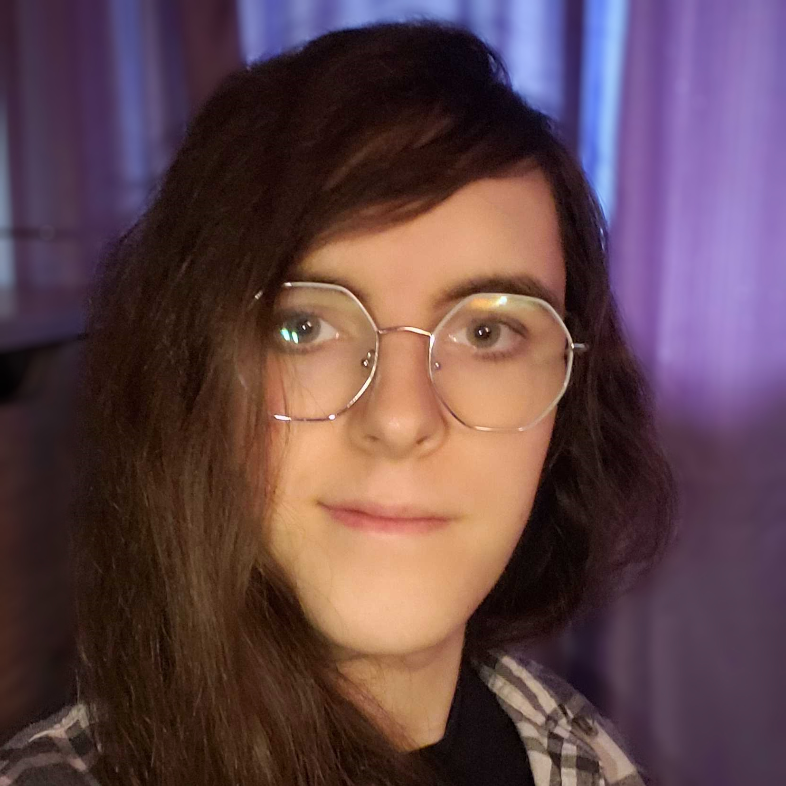
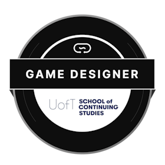

Game Developer / Designer
They/She
NB, Canada
Linkedin: https://www.linkedin.com/in/emanuel-charron-blais-8a42a0302/📧 Email: naradoxy@gmail.com
CV: https://naradoxy.github.io/hazelWebsite/portfolio

I'm a lifelong gamer turned developer who's built game projects since age 10.
Passionate about small-team collaboration and crafting memorable gameplay experiences.
Seeking a junior role where I can help bring creative visions to life while learning from seasoned devs.
Created a Minecraft mod with over 1000 downloads
Ranked Overall #19 out of 124 entries in a gamejam
Made many fully networked multiplayer games
Skilled with self teaching from a young age
Uploaded games to itch.io since 2020
Engines: Godot (primary), Unreal, Gamemaker
Languages: C#, GDScript, GDShader, GameMakerLanguage, Java, JavaScript, HTML/CSS, Pug
Tools & Art: Krita, DaVinci Resolve, Blender (basic), Paint.NET, Audacity, Soundtrap, FL Studio
Version Control: Git, Github, Sourcetree, Github Desktop
I enjoy drawing, sometimes making music, playing games to get all the achievements, taking care of my cats, and certainly making games.
All this time I've been making games pretty much solo, but I am so excited to take the next steps and delve into the industry and work in a team who love games as genuinely as I do.
For me, it's not just about finishing a game; It's about the process and crafting an experience for others to enjoy.
Game Design Course, CircuitStream (via University of Toronto)
Teaches students deep knowledge on game design and prepares them for the industry.
Feb 2025 - Sep 2025
High School Diploma, École Polyvalente Louis-J.-Robichaud
Graduated 2024
Languages: English (fluent), Français (first language), Dutch (learning)
Art & Audio: Personal art (Krita), quick‑prototype art (Paint.NET), music (Soundtrap and FL Studio)